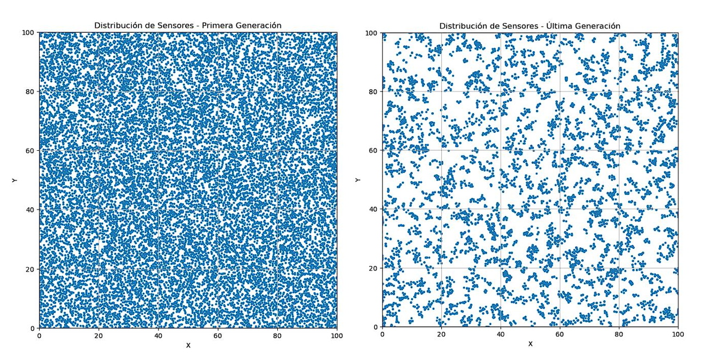
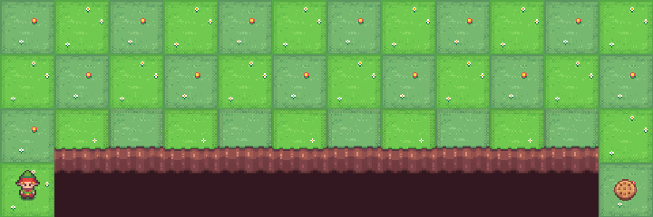
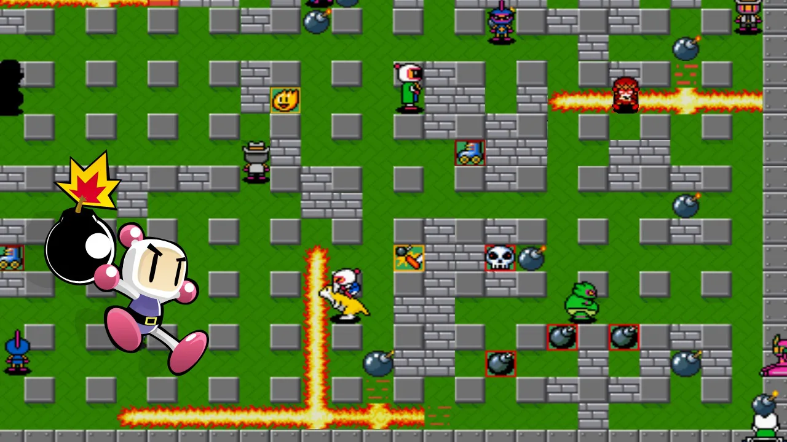

I'm a web developer and AI enthusiast who enjoys turning ideas into real, functional, and visually appealing digital experiences. My main focus is on building fast, accessible, and modern websites using today's best tools and practices.
Even though I'm still growing and learning, I have a strong curiosity to explore how intelligent systems and web technologies can come together to create innovative solutions. Every project I work on is an opportunity to improve, learn something new, and push my limits as a developer.
Zaragoza, España
Available for new projects
About me
Curious about me? Here you have it:
I'm a curious and creative mind studying Computer Engineering and Artificial Intelligence, passionate about building digital tools that make technology more human. I love transforming ideas into real, accessible, and efficient products whether it's a web app, an AI prototype, or an automation system that saves time and energy.
I started my journey as a web developer and programmer a few years ago, and since then, I've continued to grow and explore the intersection between software and intelligence. From developing responsive websites using HTML, CSS, and JavaScript, to experimenting with Python and Machine Learning, I've learned that great technology is not just about code, but about creativity and curiosity.
I'm constantly improving my skills by working on personal projects and collaborating with others. I enjoy sharing knowledge, learning from different disciplines, and finding ways to make things smarter through automation and AI.
When I'm not coding, you can find me exploring new places, reading about innovation, or connecting with other developers and creators on LinkedIn or GitHub.
I believe that every project, big or small, is an opportunity to grow, learn, and make a difference.
Finally, some quick bits about me:
B.Sc. in Computer Engineering & Artificial Intelligence
Avid learner and problem-solver
Web developer & automation enthusiast
Passionate about AI and productivity tools
One last thing: I'm always open to exciting collaborations, so feel free to reach out on LinkedIn
or check out my work on GitHub. I promise I don't bite 😉
SkillsThe skills, tools and technologies I am really good at:
Javascript
TypeScript
React
Next.js
Node.js
Express.js
Nest.js
Socket.io
PostgreSQL
MongoDB
Sass/Scss
Tailwindcss
Figma
Cypress
Storybook
Git
ExperienceHere is a quick summary of my most recent experiences:
AI Intern - SmartSensor Technologies
Developed supervised ML models to predict sensor failures.
Participated in the design of automated pipelines for deployment.
Used Python, Pandas, Scikit-learn, Git
Feb 2023 - Jun 2023
Web Developer Intern - Agencia Digital SP
Development of dynamic and responsive websites with WordPress, PHP, and Elementor Pro.
Collaboration with a team of four developers to create solutions focused on user experience.
Implementation of API integrations and web performance optimization.
Integration of professional work methodologies and development best practices.
Jul 2024 - Sep 2024
Personal Projects - Portfolio & AI Experiments
Development of personal projects focused on web technology and machine learning.
Creation of my own tools and websites using React, Next.js, and Python.
Experimentation with generative AI models and data visualization.
Focus on improving my design, logic, and deployment skills for real-world solutions.
Jun 2023 - Present
WorkSome of the noteworthy projects I have built:

Optimization of Sensor Networks using Evolutionary ComputationA C-based evolutionary algorithm designed to optimize the spatial distribution of wireless
sensors, balancing energy efficiency, coverage, and interference. The project simulated thousands
of sensor configurations and evolved them across generations to achieve optimal performance using
real-time fitness evaluation and statistical analysis.
Data AnalysisEvolutionary AlgorithmsOptimizationCCSVMatplotlib
Reinforcement Learning Agent — Q-Learning & CliffWalkingImplementation and analysis of a reinforcement learning agent
trained using Q-Learning in the CliffWalking and Taxi environments. The project included policy
exploration, hyperparameter tuning, Q-table visualization, and performance comparison. The agent
successfully learned optimal navigation strategies through trial and reward-based adaptation.
PythonQ-LearningGymnasiumNumpyPandasMatplotlib


Old-School Videogame in RISC-V AssemblyDevelopment of a functional retro-style game inspired by Bomberman,
programmed entirely in RISC-V assembly using the RARS simulator. The project involved translating
high-level logic from C to assembly, implementing subroutines, memory management, and input/output handling at the low level.
TestimonialsNice things people have said about me:
“During his internship at Agencia SP, Javier showed great professionalism and adaptability to a real-world workflow. His proficiency with WordPress, PHP, and Elementor, along with his attention to detail, contributed significantly to improving the performance and usability of several client websites.”
Santiago PonceProject Manager - Agencia Digital SP
“Javier stood out for his ability to combine technical precision with creative problem-solving. In his Evolutionary Computation project, he demonstrated a deep understanding of genetic algorithms and excellent implementation skills in C. The result was a project with professional-level quality.”
Mr. Carlos GraciaProfessor of Evolutionary Computation - Universidad San Jorge
“What impressed me most about Javier was his constant curiosity and drive to go beyond expectations. In the Q-Learning project, he not only completed the CliffWalking and Taxi environments but also performed a detailed analysis of the agent’s behavior, showing remarkable analytical depth for his level.”
Sergio GraciaMachine Learning Tutor - Universidad San Jorge
Get in touchWhat's next? Feel free to reach out to me if you're looking for a developer, have a query, or simply want to connect.